ICTC 지휘통제절차 웹툰 · 시즌 1
12화 「네 가지 질문」
디브리핑 — 계획, 실제, 이유, 다음
같은 날 저녁, 귀소 직후 소방서 회의실. 현장활동이 끝난 직후, 기억이 아직 선명할 때.
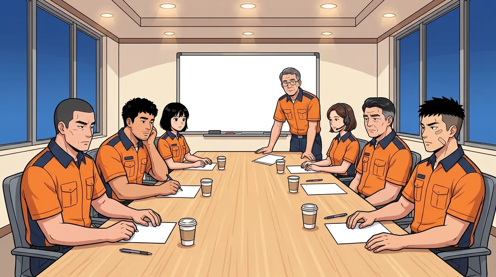
4층에서 있었던 일… 다 말해야 하나. 누구 잘못인지 따지는 자리면…
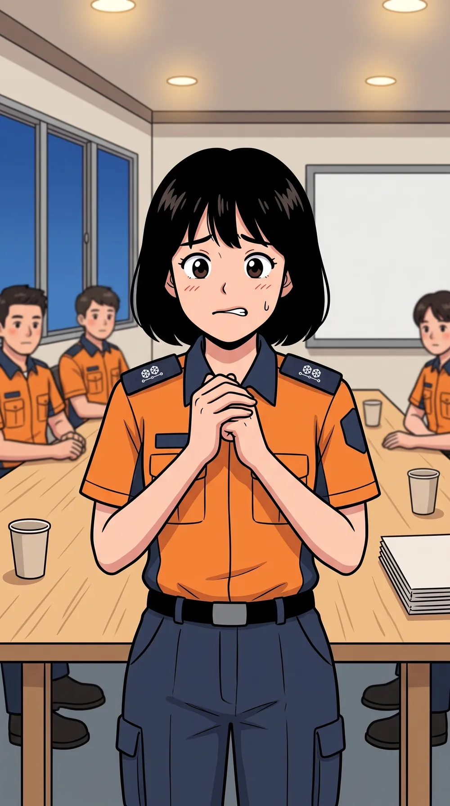
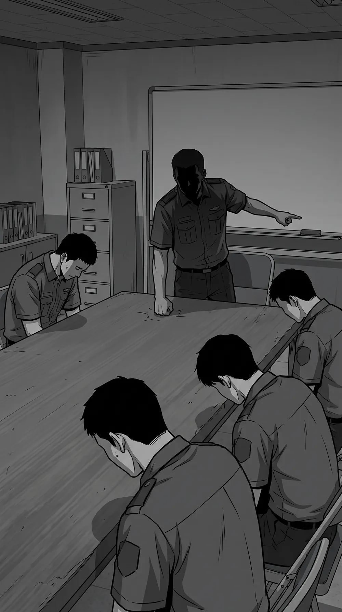
✕ 잘못된 예 — 잘잘못을 따지는 디브리핑. 그 순간부터 아무도 말하지 않는다.
그래서 누구 잘못이야? 4층에서 누가 늦게 보고했어!
디브리핑 결과는 처벌의 근거가 아니다. 지도와 개선에만 쓴다.
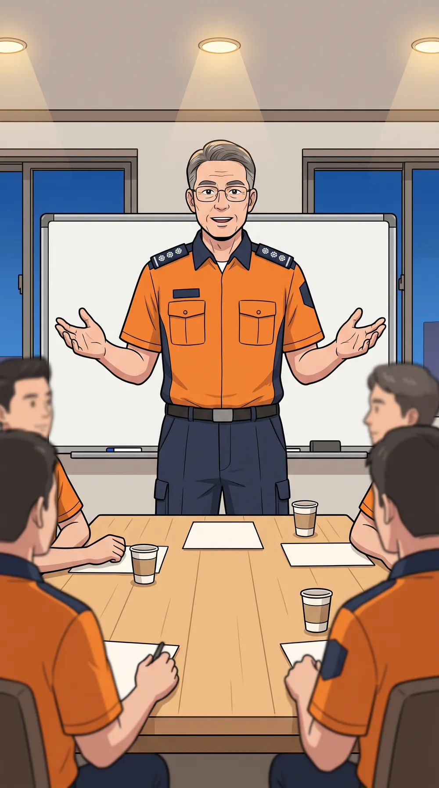
시작 전에 원칙부터. 오늘 이야기는 누구를 처벌하는 데 쓰지 않습니다. 계급 상관없이, 본 대로 말해 주십시오.
'누가'가 아니라 '무엇'을 봅니다. 완벽한 현장은 없었어요. 잘한 건 칭찬하고, 실수는 교훈으로.
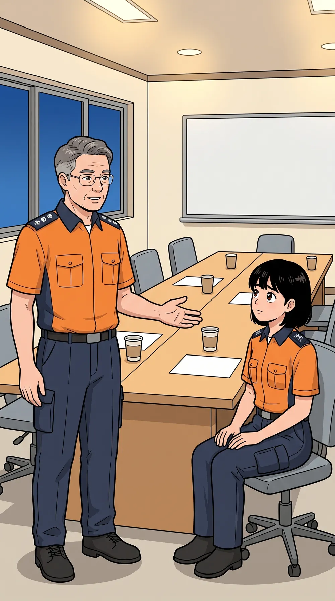
지휘대장이 출동한 현장은 현장활동이 끝난 직후, 지휘대장이 주관해 출동대장들이, 출동대장이 주관해 대원들이 참여한다. 오늘은 한자리에서.
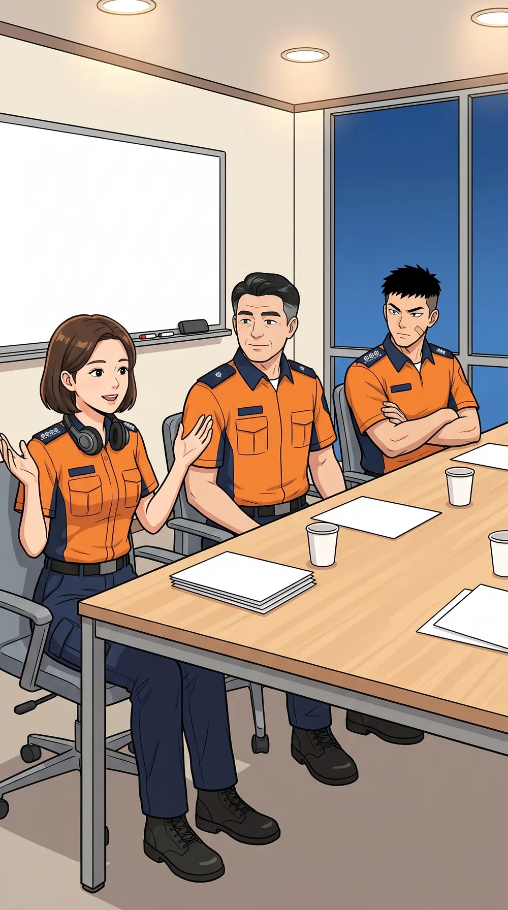
상황실도 같이 들을게요. 무전 저편에서 본 그림도 있으니까요.
네 가지 질문. ① 무엇을 계획했나? ② 실제로 어떤 일이 일어났는가? ③ 왜 일어났는가? ④ 다음에는 어떻게 할 것인가?
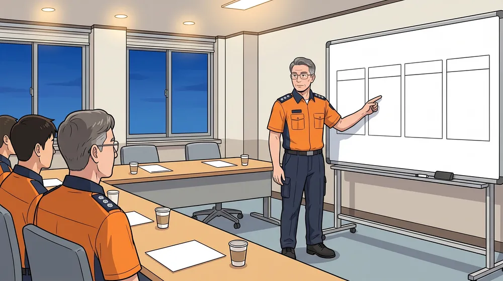
① 계획: 임무의 의도, 핵심 과업 배정, 원하던 종결 상태.
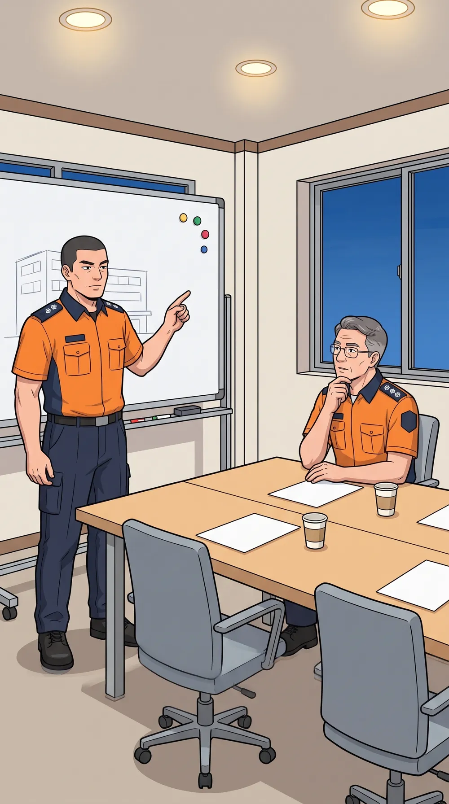
계획은 공격전략이었습니다. 진압1대 4층 인명검색·진압, 구조1대 C면 6층 구조, 구급1대 임시의료소.
원하던 끝은?
작업자 전원, 대원 전원 무사히.
지위가 높은 사람이 말을 막지 않도록, 막내부터 묻는다.
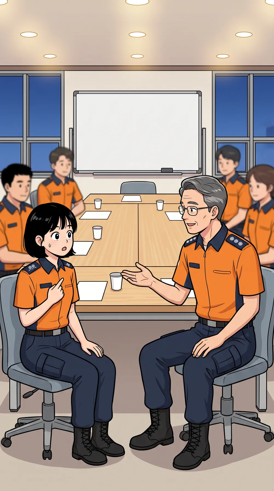
실제로 무슨 일이 있었는지는, 막내부터 듣겠습니다. 이도경 소방사.
네? 저, 저부터요?
② 실제: 본 것과 한 것을 사실대로.
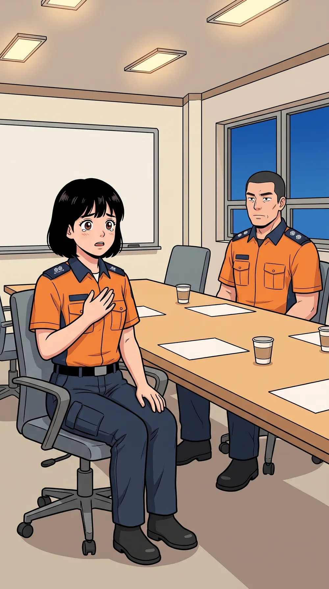
4층 안쪽 자재 더미 쪽에서 '쉬익' 소리를 들었을 때, 저는 '뭔가 이상한데요'라고만 했습니다. 무엇이, 어디서 이상한지, 그래서 어떻게 하자는 건지는 말하지 못했어요. 그리고 바로 터졌습니다.
RIT 대기 위치에서는 긴급탈출 무전을 듣자마자 진입 준비에 들어갔습니다.
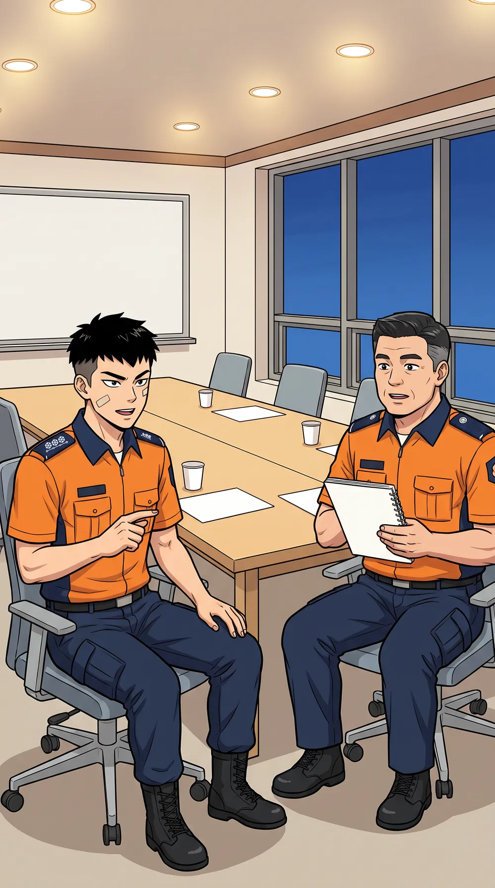
임시의료소에서는 나오는 대원부터 바로 분류하고 처치했습니다.
상황실 무전 기록이에요. 시각을 같이 맞춰 보죠.
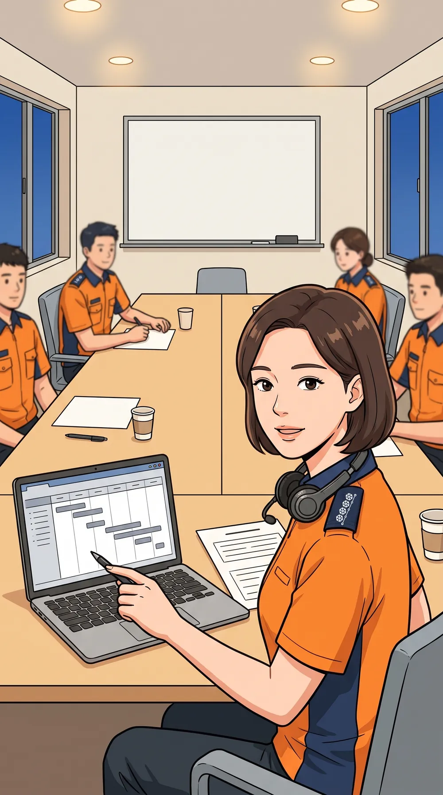
여러 관점을 모아, 무슨 일이 있었는지 하나의 그림을 만든다.
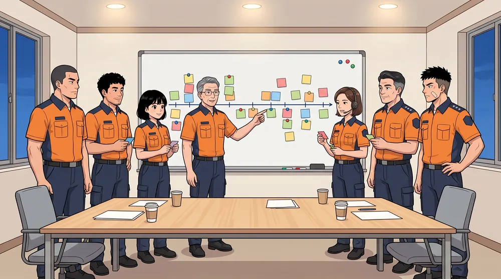
③ 왜: 원인과 영향을 분석한다. '누가'가 아니라 '무엇'.
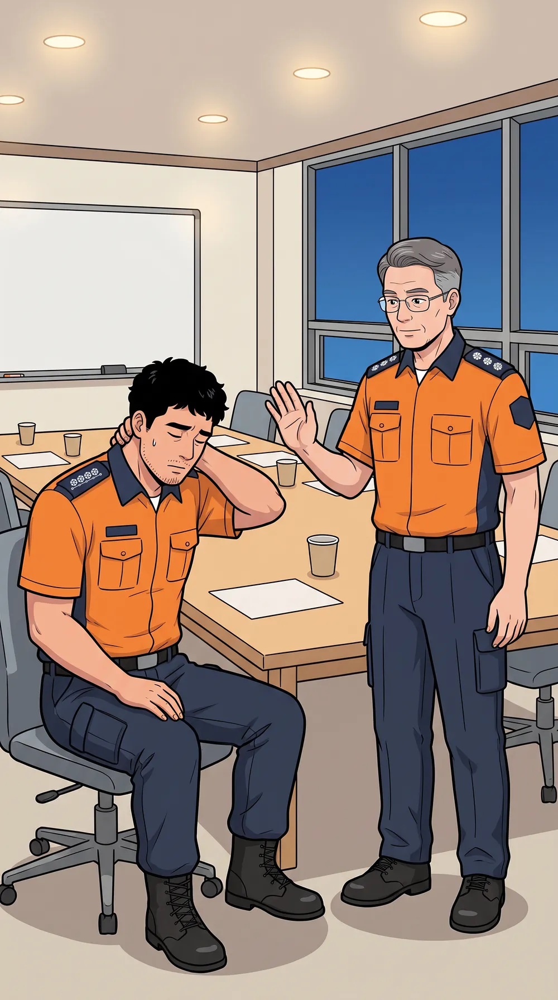
제가 도경이 선임인데, 그런 걸 평소에 제대로 가르쳤어야…
주강호 소방장, 거기서 멈춥시다. 누가 잘못했나가 아니라, 무엇이 말을 막연하게 만들었나.
서두르지 않고, 차근차근 설명을 끌어낸다.
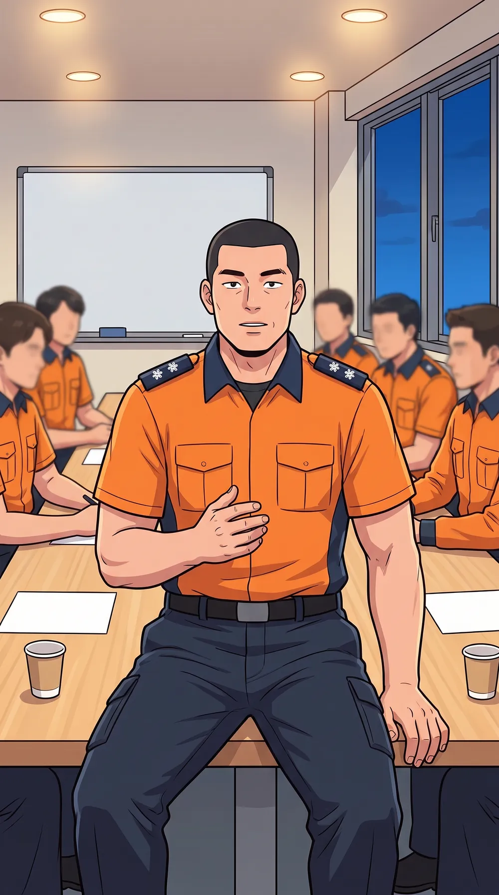
'이상하다'는 말은 있었습니다. 그게 '접근 중지' 같은 결정의 말로 바뀌지 못했던 겁니다.
④ 다음 — 약점 교정: 통제 밖의 일보다 고칠 수 있는 것에 집중한다.
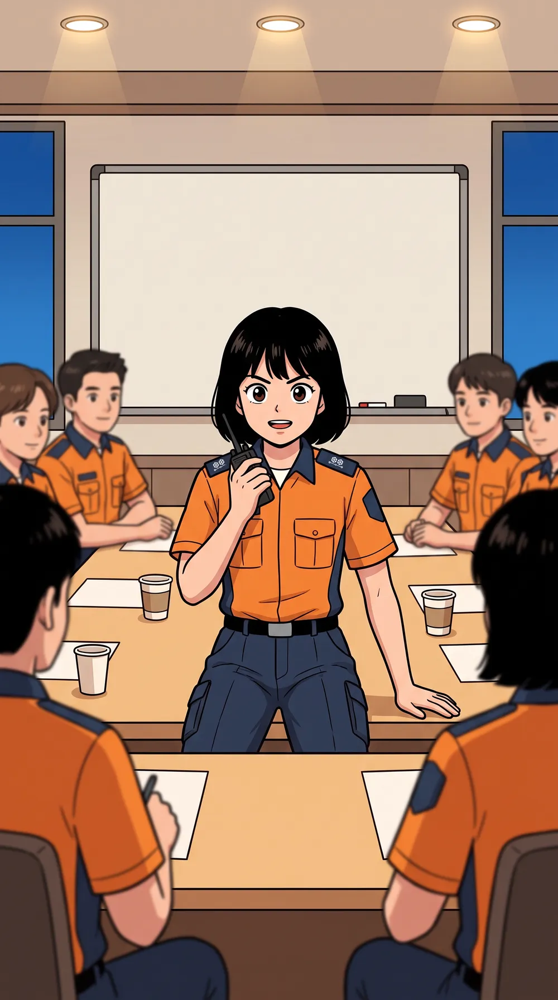
다음엔 '이상한데요'가 아니라, 무엇이 어디서 이상한지, 그래서 무엇을 요청하는지까지 말하겠습니다. '4층 안쪽 자재 더미, 쉬익 소리 남. 접근 중지 요청합니다'처럼요.
대원은 알면 즉시 말하고, 지휘관은 반드시 듣고 검토해 반영한다.
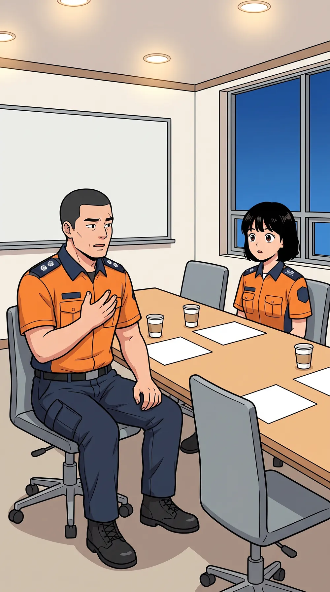
받는 쪽도 고친다. 나는 열기 보고에 매달려 있었다. '뭐가, 어디야?' 하고 바로 되물었어야 했다.
④ 다음 — 강점 유지: 잘한 것을 찾아 계속 이어 간다.
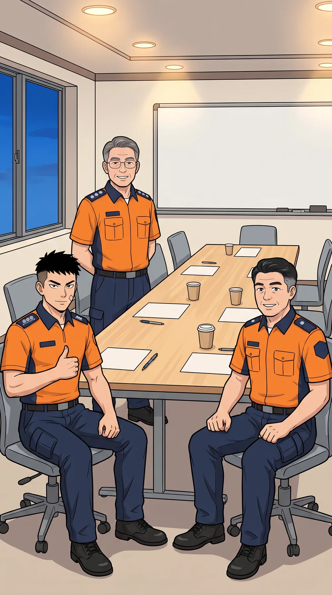
잘한 것도 말합시다.
RIT를 미리 정해 둔 덕에 투입이 빨랐습니다.
임시의료소 자리를 처음부터 안전한 곳에 잡아 둔 것도요.
끝낼 때 교훈을 두세 가지로 정리한다. 원본 기록은 기밀로 지킨다.
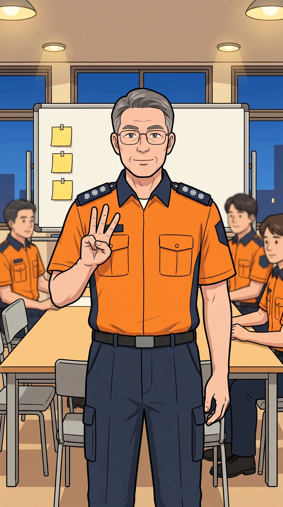
오늘 교훈은 셋. 하나, 이상 징후는 결정의 말로 바로. 둘, 받는 쪽은 바로 되묻고 반영. 셋, RIT 사전 지정과 인원 점검은 그대로.
며칠 뒤, 현장대응활동 검토회의. 각급 지휘관은 디브리핑을 거쳐 참여한다. 비난과 책임추궁이 아니라, 문제를 진단하고 교훈과 개선 방안을 나누는 자리.
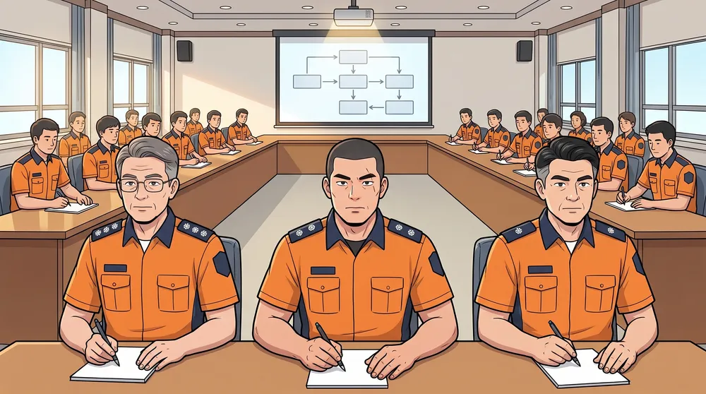
현장지휘관은 필요하면 디브리핑 결과를 소방서장에게 보고하고, 담당 부서는 SOP와 정책에 반영해 모두와 공유한다.
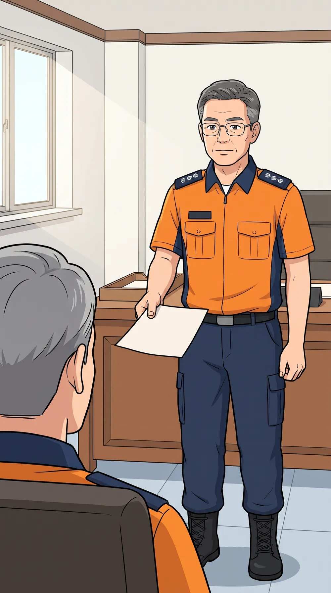
디브리핑 결과 보고드립니다. 이상 징후 보고를 결정의 말로 하는 훈련을 넣자는 건의입니다.
검토회의 결과는 모든 직원과 나누고, SOP의 개발·훈련·적용·평가·개정에 반영한다.
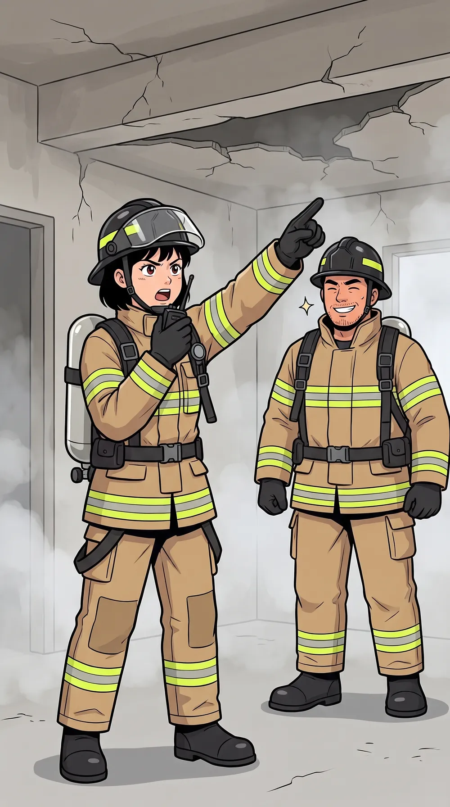
진압1대, 천장 처짐! 4층 진입 중지 요청합니다!
그거야. 무엇, 어디, 요청.
처음엔 불만 보였다. 이제는 그 불 앞에서 누가 무엇을 묻고, 무엇을 말해야 하는지가 보인다.
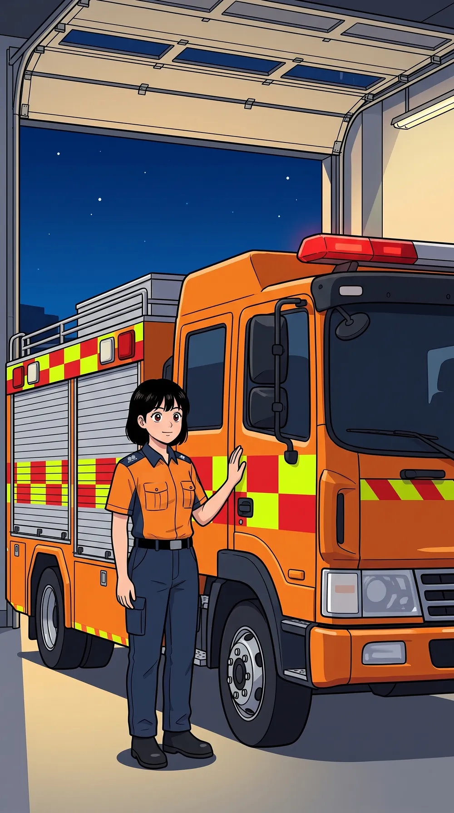
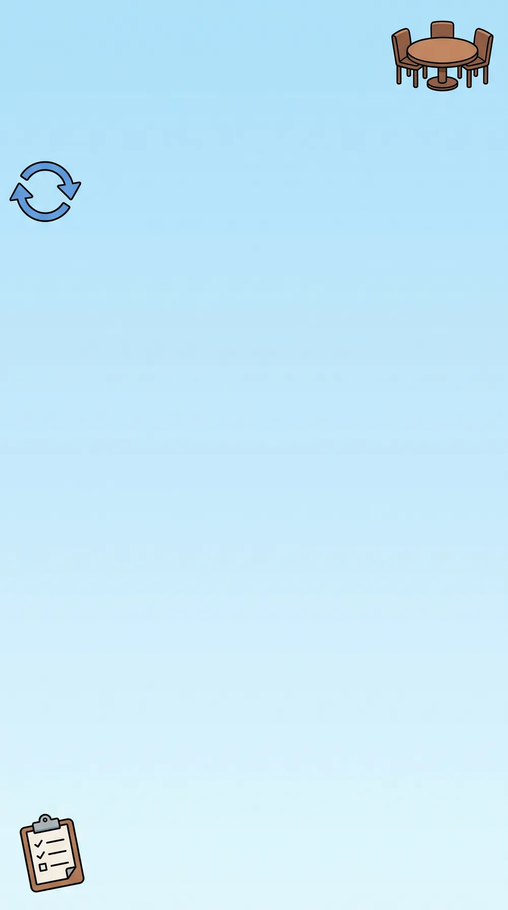
핵심 포인트
- 현장활동이 끝나면 디브리핑. 처벌이 아니라 개선을 위해, 모두가 말하게SOP 113 1.1 · 3.1.3 · 3.1.6
- 네 가지 질문: 계획 → 실제 → 이유('누가' 아닌 '무엇') → 다음(약점 교정·강점 유지)SOP 113 2.1
- 결과는 보고·검토회의를 거쳐 SOP와 훈련으로 돌아가고, 모두와 공유한다SOP 113 4.1 · SOP 111 2.2 · 2.4
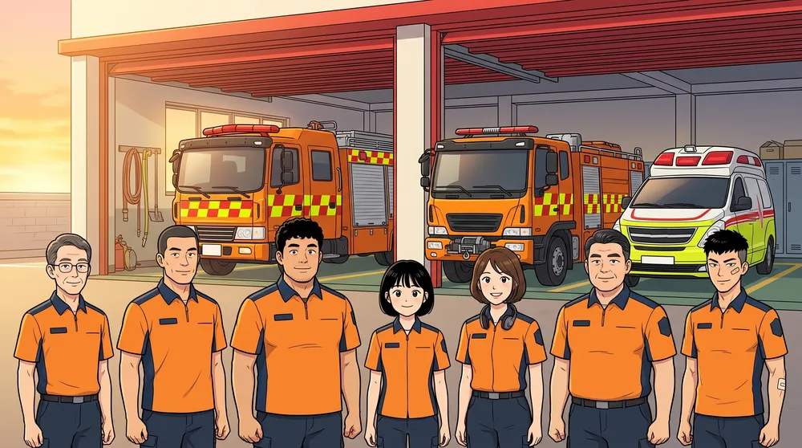
지휘는 도착하며 선언으로 시작해, 끝까지 이어지고, 배움으로 돌아온다. 113의 교훈은 다시 100의 출발점이 된다. 다음 출동벨이 울리면, 오늘보다 조금 더 나은 현장을 위해. — 시즌 1 끝.
근거: SOP100-113 지휘통제절차 해설(2025.12. 개정판) · 교육용 전 12화© 2026 부산ICTC 서종근 외 5명. All rights reserved.
 ×
×